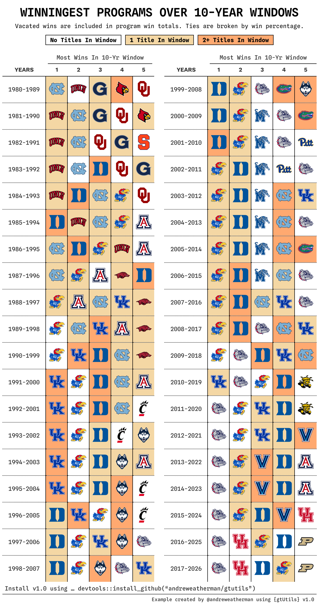

Every ten-year window since 1980 gives you 38 rows, and each row holds a year range and five logos. That is a table six columns wide and 38 rows tall, which exports as a narrow strip with a lot of empty space on either side.
There are two ways to fold something like that.
gt_grid() builds each half as its own table and arranges
them, which the grid
tables vignette covers. gt_snake() goes the other way
and keeps one table, cutting the rows into side-by-side blocks that
repeat the column labels. Because it stays a single table, everything
you have already applied to the cells comes with it.
That last part is why this example works the way it does. The shading
here is per-cell, driven by how many national titles a program won
inside each window, and it is far easier to reason about on the plain
38-row grid than on the folded one. So we color first and fold second.
Along the way this vignette uses gt_highlight_cells(),
gt_legend_discrete(), and gt_538_caption(),
and spends some time on the scraping, since that is where most of the
actual work lives.
Scraping the season records
Sports Reference publishes one ratings page per season, so we ask for 47 of them and stack the results.
library(rvest)
library(janitor)
library(glue)
season_results <- map_dfr(1980:2026, function(year) {
Sys.sleep(3) # sports reference rate limits
suppressWarnings(
read_html(glue("https://www.sports-reference.com/cbb/seasons/men/{year}-ratings.html")) %>%
html_nodes("#ratings") %>%
html_table() %>%
pluck(1) %>%
row_to_names(1) %>%
clean_names() %>%
mutate(year = year, across(w:l, as.numeric)) %>%
filter(!is.na(w)) %>%
select(team = school, wins = w, losses = l, year)
)
}, .progress = "Getting data")Three things in there are worth pulling out.
The Sys.sleep(3) is not optional. Sports Reference
starts returning a 501 if you hit it in a tight loop, and since that
comes back as a response rather than a thrown error, a run can look like
it worked while quietly dropping seasons. Three seconds is enough to
stay under the limit for a job this size.
These tables carry a spanner row above the real header, so
html_table() reads the spanner as the column names and
leaves the true header sitting in row one
(row_to_names(1)). Promoting row one fixes it, and
clean_names() then turns W and L
into names you can use without backticks.
The filter(!is.na(w)) clears the repeated header rows
that Sports Reference leaves every twenty teams or so. Those survive the
parse as rows where the numeric columns hold text, so coercing with
as.numeric() first turns them into NA and the
filter takes them out.
Rolling windows
A rolling window is a filter and a sum. This function takes a start year, keeps the ten seasons from there, and totals each team’s record.
calculate_windows <- function(start_year, data) {
data %>%
filter(between(year, start_year, start_year + 9)) %>%
summarize(
total_wins = sum(wins),
total_losses = sum(losses),
win_percentage = total_wins / (total_wins + total_losses),
seasons = n(),
.by = team
) %>%
mutate(years = paste(start_year, start_year + 9, sep = "-"), begin = start_year)
}
plot_data <- map_dfr(1980:2017, calculate_windows, season_results) %>%
arrange(begin, desc(total_wins), desc(win_percentage)) %>%
mutate(position = row_number(), .by = begin) %>%
slice_head(n = 5, by = years)Mapping it over the start years gives every window at once. Ranking
happens inside each window with row_number() after the
arrange(), and win percentage breaks ties on total
wins.
The start years stop at 2017 while the seasons run through 2026 (a window starting in 2018 does not have ten seasons in it yet).
Counting titles
The shading comes from national titles won inside each window, which means a second scrape and the same windowing logic.
champs <- read_html("https://www.sports-reference.com/cbb/seasons/") %>%
html_nodes("#seasons_NCAAM") %>%
html_table() %>%
pluck(1) %>%
clean_names() %>%
mutate(year = parse_number(tournament)) %>%
select(year, team = ncaa_champion) %>%
filter(year >= 1954 & year != 2020)
calculate_titles <- function(start_year, data) {
data %>%
filter(between(year, start_year, start_year + 9)) %>%
summarize(total_titles = n(), .by = team) %>%
mutate(years = paste(start_year, start_year + 9, sep = "-"))
}
champs <- map_dfr(1980:2024, function(y) calculate_titles(y, champs)) %>%
mutate(total_titles = ifelse(total_titles == 1, "1", "2+")) %>%
select(team, total_titles, years)
plot_data <- plot_data %>%
left_join(champs, by = c("team", "years")) %>%
mutate(total_titles = replace_na(total_titles, "0"))The year != 2020 filter is there because the 2020
tournament was cancelled. That row still exists on the page with an
empty champion, and left in, it counts a title for a team named
"".
Bucketing into "0", "1", and
"2+" keeps the key short. The replace_na() at
the end matters because the join only produces rows for teams that won
something, which leaves every other team-window as NA.
The pivot, and keeping the mask aligned
We want one row per window and five logo columns in rank order. Logos
come from cbbdata as a named vector, so we can look them up
by team name.
library(cbbdata)
logos <- cbd_teams() %>% select(team = sr_team, logo)
logos <- logos %>% pull(logo) %>% rlang::set_names(logos$team)pivot_wider() spreads one value column, so pivoting on
the logo gives you logos and nothing else. The title count lives in
total_titles, and it would be gone by the time we draw the
table.
The way around it is to pivot twice from the same ordered frame, once for what you draw (years and teams) and once for what you style by (titles).
ordered <- plot_data %>%
mutate(logo = unname(logos[team])) %>%
arrange(begin, position)
# years + five teams
wide <- ordered %>%
pivot_wider(id_cols = years, names_from = position, values_from = logo, names_sort = TRUE)
# the shading key
titles <- ordered %>%
pivot_wider(id_cols = years, names_from = position, values_from = total_titles, names_sort = TRUE) %>%
select(-years)Sorting once, before either pivot, is what keeps the two frames in
step. Both inherit the same row order and the same column order, so cell
[3, 2] in titles describes cell
[3, 2] in wide with no matching or joining
afterward.
Each shading condition is then one comparison over the whole frame,
which gives a TRUE/FALSE grid the same shape
as the logo columns. "0" is the base state, so it needs no
mask of its own.
Color first, then snake
gt_highlight_cells() fills individual cells from a
logical grid of the same shape, which is what the masks are. We run it
on the plain, un-snaked table.
wide %>%
gt(id = "table") %>%
gt_highlight_cells(-years, condition = mask_1, fill = "#F4D7A4") %>%
gt_highlight_cells(-years, condition = mask_2, fill = "#FFA970") %>%
gt_snake(n_cols = 2) %>%
gt_theme_athletic()gt_snake() rebuilds the table with the rows cut into two
blocks side by side, and it moves any body-cell styling to wherever that
cell ended up. A fill on row 20 of the long grid lands on row one of the
second block, because it is the same cell.
Ordering is the thing to remember here. Styles carry through the
reshape but formatting and content transforms do not, so anything from
the fmt_*() family, text_transform(), or
gt_img_rows() has to come after the snake. Themes go after
as well.
For a parallel frame you cannot apply before folding,
gt_snake_align() reshapes it into the same blocks so it
still lines up.
gt_snake() puts a real empty column between the blocks
rather than padding the seam, because padding shifts the body cells
without shifting the column label and the two stop lining up. That
spacer would otherwise pick up rules from a theme or from
gt_border_grid(), so clean_gaps = TRUE, the
default, strips its borders and background and keeps the gap blank.
Drawing the logos
With the cells shaded, we render the URLs as images. After the fold,
each column carries its block number as a suffix, running
1_1 through 5_2.
logo_cols <- unlist(lapply(1:2, function(i) paste0(pos, "_", i)))
# ... %>%
reduce(logo_cols, .init = ., .f = ~ rlang::inject(
gtExtras::gt_img_rows(.x, columns = !!rlang::sym(.y), height = 35)
))gt_img_rows() takes one column at a time, and it reads a
quoted string like "1_1" as a position rather than a name.
reduce() threads the table through one call per column, and
!!rlang::sym(.y) hands each one over as a bare name, which
is the form it wants. Keeping this inside the pipe avoids a stored
intermediate.
Spanners, widths, and rules
The rest is ordinary gt. Each block gets a spanner, the
year column gets a label and a fixed width, and a dotted rule separates
the logos.
# ... %>%
cols_align(columns = everything(), "center") %>%
tab_spanner(columns = matches("[0-9]_1"), label = "Most Wins In 10-Yr Window", id = 1) %>%
tab_spanner(columns = matches("[0-9]_2"), label = "Most Wins In 10-Yr Window", id = 2) %>%
cols_label(starts_with("years") ~ "Years") %>%
cols_width(
starts_with("years") ~ px(90),
-c(starts_with("years"), contains("gap")) ~ px(45)
) %>%
tab_options(table_body.hlines.style = "solid", table_body.hlines.color = "black") %>%
tab_style(
locations = cells_body(columns = 1:12),
style = cell_borders(color = "black", sides = "right", weight = px(1.5), style = "dotted")
)matches("[0-9]_1") and contains("gap") pick
the snaked columns out by their naming pattern instead of listing twelve
names by hand, which also means the code survives a change to
n_cols.
The dotted rule is set to px(1.5) because
gt_theme_athletic() already draws a thin solid separator on
every column. Anything lighter won’t be applied!
The legend and the caption
gt_legend_discrete() takes a named vector of
label = color and draws the key.
# ... %>%
gt_legend_discrete(
c("No Titles In Window" = "#ffffff", "1 Title In Window" = "#F4D7A4",
"2+ Titles In Window" = "#FFA970"),
location = "top", label_placement = "inside", shape = "square",
gap = 8, swatch_size = 20, border_width = 1.5, border_color = "black",
heading = md("Winningest programs over 10-year windows"),
subtitle = md("Vacated wins are included. Ties are broken by win percentage."),
heading_style = list(font = "Spline Sans Mono", size = 24, weight = 600,
transform = "uppercase", margin_bottom = 0, align = "center"),
subtitle_style = list(font = "Spline Sans Mono", size = 12, margin_bottom = 5,
align = "center", color = "black"),
label_style = list(font = "Spline Sans Mono", size = 12, margin_bottom = 12)
) %>%
gt_538_caption(
md('Install v1.0 using ... devtools::install_github("andreweatherman/gtutils")'),
"Example created by @andreweatherman using {gtUtils} v1.0"
)label_placement = "inside" prints each label on its own
swatch and picks the text color per swatch for contrast, which is how
the white swatch stays readable. The heading_style,
subtitle_style, and label_style lists follow
the same convention as gt_grid() and
gt_title_header().
gt_538_caption() takes the top line, which gets the rule
under it, and the bottom line, which becomes the source note. Apply it
after the theme, since it reads the rendered table to borrow a rule
color that matches.
Putting it together
The whole pipeline, from the wide frame to the finished image:
wide %>%
gt(id = "table") %>%
gt_highlight_cells(-years, condition = mask_1, fill = "#F4D7A4") %>%
gt_highlight_cells(-years, condition = mask_2, fill = "#FFA970") %>%
gt_snake(n_cols = 2) %>%
gt_theme_athletic() %>%
reduce(logo_cols, .init = ., .f = ~ rlang::inject(
gtExtras::gt_img_rows(.x, columns = !!rlang::sym(.y), height = 35)
)) %>%
cols_align(columns = everything(), "center") %>%
tab_spanner(columns = matches("[0-9]_1"), label = "Most Wins In 10-Yr Window", id = 1) %>%
tab_spanner(columns = matches("[0-9]_2"), label = "Most Wins In 10-Yr Window", id = 2) %>%
cols_label(starts_with("years") ~ "Years") %>%
cols_width(
starts_with("years") ~ px(90),
-c(starts_with("years"), contains("gap")) ~ px(45)
) %>%
tab_options(table_body.hlines.style = "solid", table_body.hlines.color = "black") %>%
tab_style(
locations = cells_body(columns = 1:12),
style = cell_borders(color = "black", sides = "right", weight = px(1.5), style = "dotted")
) %>%
gt_legend_discrete(
c("No Titles In Window" = "#ffffff", "1 Title In Window" = "#F4D7A4",
"2+ Titles In Window" = "#FFA970"),
location = "top", label_placement = "inside", shape = "square",
gap = 8, swatch_size = 20, border_width = 1.5, border_color = "black",
heading = md("Winningest programs over 10-year windows"),
subtitle = md("Vacated wins are included. Ties are broken by win percentage."),
heading_style = list(font = "Spline Sans Mono", size = 24, weight = 600,
transform = "uppercase", margin_bottom = 0, align = "center"),
subtitle_style = list(font = "Spline Sans Mono", size = 12, margin_bottom = 5,
align = "center", color = "black"),
label_style = list(font = "Spline Sans Mono", size = 12, margin_bottom = 12)
) %>%
gt_538_caption(
md('Install v1.0 using ... devtools::install_github("andreweatherman/gtutils")'),
"Example created by @andreweatherman using {gtUtils} v1.0"
)